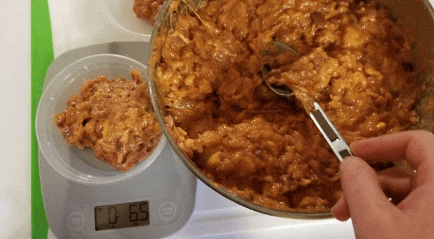

Raw Cat Food

This raw cat food recipe from Raw Feeding for IBD cats is one of the few that's undergone nutritional analysis!
Ingredients
- 28 oz. boneless protein
- 2 oz. animal liver
- 6 oz. animal kidney
- 1 teaspoon eggshell powder
- ½ teaspoon vitamin supplement mix (see recipe)
- 500mg salmon oil
- 1 large egg yolk per pound of food
- Water, as needed
Instructions
- Stir together the eggshell powder and vitamin supplement in a small bowl.
- If using chicken, remove half the skin and include some dark meat.
- Cut the protein, liver, and kidney into chunks that will fit through your meat grinder.
- Place a bowl under the grinder and feed the meat and organs through, adding the salmon oil capsules intermittently.
- Transfer the ground mixture to a large bowl then add the dry supplements, egg yolk, and water as needed to combine.
- Portion out the mixture and freeze or refrigerate.
Notes: This recipe can be fed ground or as chunks. When feeding ground, mix the dry supplements well before adding them to the mix. When feeding as chunks, cut the pieces small – chop it into thin slices rather than square chunks.